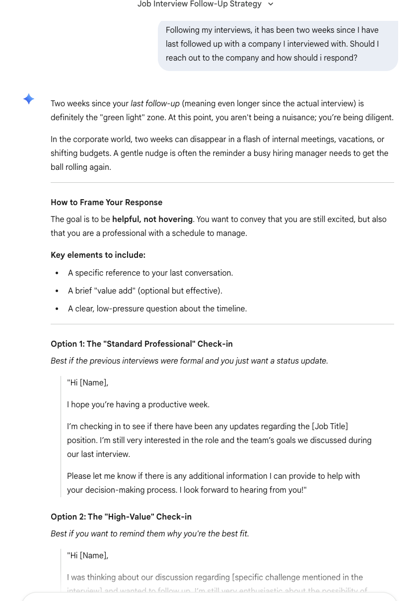
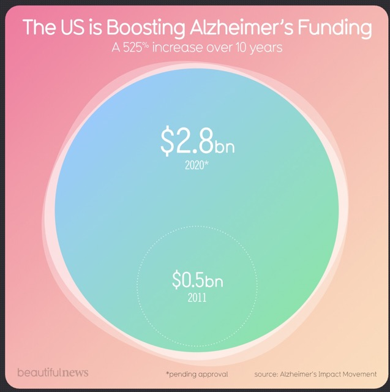

Welcome
Hi my name is Grace Allen and welcome to my Portfolio for DCDA Capstone.I am currently studying Strategic Communicagtion and minoring in Digitial Culture and Data Analytics. I hope this portfolio will give you more insight into what I can do.
Each page will show something different about me and showcase my skills! Hope you enjoy!
View My ResumeAbout Me
Who I am: I'm Grace Allen I am a senior Strategic Communications major and I am from Kansas City and live close to the Missouri Kansas state line.
My interests: I'm very passionate about anything creative, specifically I love photography and like to try design. This is what also drew me to DCDA.
What I hope to learn: I'm hoping to keep learning Data Analytics skills, I have a lot of room to grow still.

My Work
Click on any card below to view that lab assignment. Focus of actual labs may change over the course of the semester:

AI Tool Evaluation
Lab 2Analysis of AI tools and their capabilities, exploring how artificial intelligence is changing digital culture.

Tufte Critique
Lab 3Critical analysis of a data visualization using Edward Tufte's principles of graphical excellence.

Tableau Visualization
Lab 4Interactive data visualization created with Tableau Public, exploring patterns in real-world data.
Lab 5
Lab 5Portfolio enhancement with dark mode feature and debugging with AI assistance.
Hometown Map
Lab 6Interactive Folium map showcasing meaningful locations from my hometown with personal reflections.
Semester Reflection
What I learned:
Through creating my skills portfolio website this semester, I learned the basics of how websites are structured and how different components work together. At the beginning of the semester, I had very little experience working directly with website code, so learning how HTML and CSS function together was an important part of the process. I learned how HTML provides the structure of a webpage by organizing content with headings, paragraphs, images, and links. At the same time, CSS controls how the website looks visually by adjusting things like colors, spacing, fonts, and layout. As I continued working on the portfolio throughout the semester, I became more comfortable editing code in Visual Studio Code and seeing how changes in the code affected the appearance of the website.
Another important skill I developed was understanding how GitHub works. I learned how to push my files to a repository and how GitHub Pages can host a live version of my website online. This helped me understand how developers publish websites and share their work publicly. Over time I also learned how to organize files within my project, including keeping images, HTML pages, and stylesheets in the correct folders so everything would display properly on the site.
Each lab that I added to my portfolio helped demonstrate a different skill. For example, some labs focused on analyzing data visualizations and embedding graphics, while others involved evaluating AI tools or working with datasets. I also embedded visualizations such as Tableau dashboards and included written reflections explaining each project. By now, my website has become a complete portfolio that shows both the technical work and the written analysis that I completed throughout the course.
Challenges I overcame:
One of the biggest challenges I faced while creating the website was understanding how different files connect to each other. At times, images would not appear on the page or links between pages would not work correctly. Usually this happened because of something small like a file path error, a typo in the code, or a missing folder reference. These issues were frustrating at first, but they helped me learn how important attention to detail is when writing code.
Another challenge was learning how to troubleshoot problems when something did not work as expected. Sometimes I would make a change to the code and the page would not update the way I thought it should. To solve this, I had to experiment with small adjustments, review my code carefully, and test different solutions. Using Live Server in VS Code helped a lot because it allowed me to instantly see the results of changes to my code.
I also used AI tools at times to help explain certain coding concepts or identify possible mistakes in my code. However, I still needed to test the suggestions and make sure they actually worked in my project. This process helped me better understand what the code was doing rather than just copying solutions.
Overall, building this portfolio helped me become more comfortable working with website development tools and understanding how websites function behind the scenes. While the process involved a lot of trial and error, it ultimately helped me build confidence in my ability to troubleshoot problems and continue learning new technical skills.